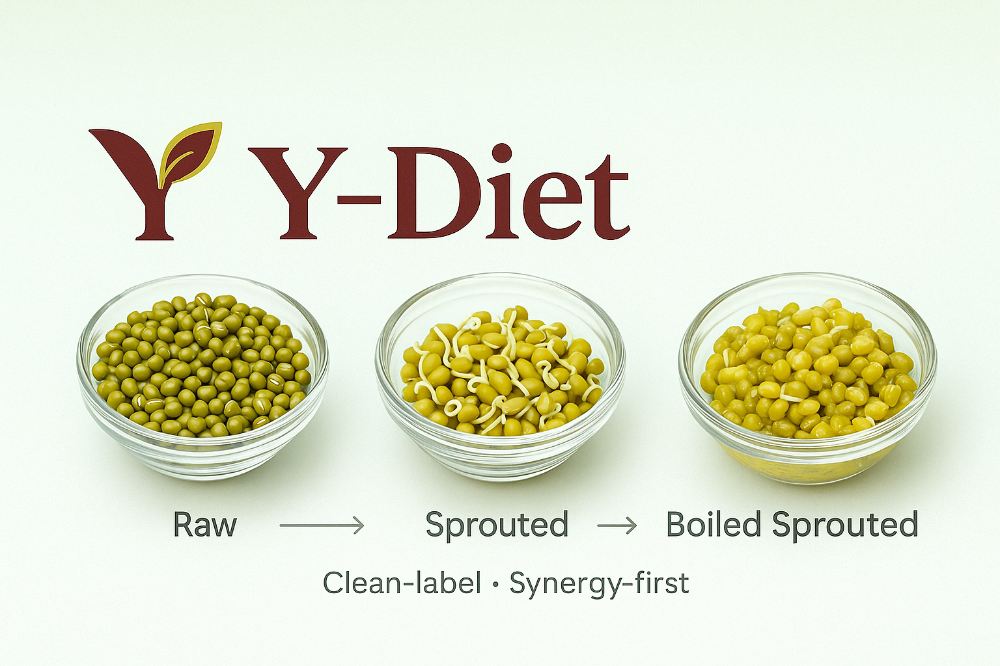

Y-Diet: Pulses Comparison
Raw vs Sprouted vs Boiled Sprouted — interactive, visual, and printable. Assume moong/mung unless noted.
Clean-Label
Synergy-First
Feel Light
Notes & Tips:
- For most people, boiled sprouted moong → least gas, most lightness, best taste.
- Reduce gas further with ginger, asafoetida (hing), cumin, lemon, and thorough rinsing.
- Safety: Avoid eating raw kidney beans/soy/black gram; cook thoroughly. Keep sprouting gear clean and refrigerate sprouts; use within 1–2 days.
Scores are on a 1–5 scale for visualization; higher is better. Labels like “Lower = Better” are pre-inverted.
Adjust the sliders. Scores are auto-normalized by the total weight.